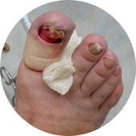

- №1 Для избавления от любого типа грибка
- Рекомендован дерматологами
- 13000+ довольных клиентов за 2018 год
Комплексное избавление от грибка —
изнутрии снаружи
- Комплекс Микоцин устраняет зуд, неприятный запах и возвращает эстетичный вид
- Таблетки Микоцин уничтожают все виды грибка на ногтях и коже
- Гель Микоцин восстанавливает кожу и создает на ней защитный барьер
Бесплатно
Успейте заказать со скидкой до 10.09.2018
старая цена 918₽
новая цена 459₽
Осталось 10упаковок со скидкой
Ваши данные защищены!
Грибок – это опасная инфекция
которая угрожает вам и вашим близким, ведь с каждым днем грибок приводит к:
которая угрожает вам и вашим близким, ведь с каждым днем грибок приводит к:
Сложным формам аллергии
Может появится сильная реакция на на привычную пищу, одежду,
средства гигиены

Потере ногтя и ампутации пальца
После полного разрушения ногтя грибок распространяется на
палец, что приводит к его ампутации
Тяжелому поражению внутренних органов
Может привести к повреждениям мозга, слепоте, отказу печени,
почек и сердца
Статистика: каждые 60 секунд врачи диагностируют
опасные поражения внутренних органов, вызванные грибком, у 1-го
пациент